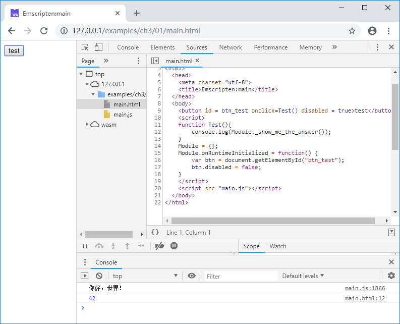
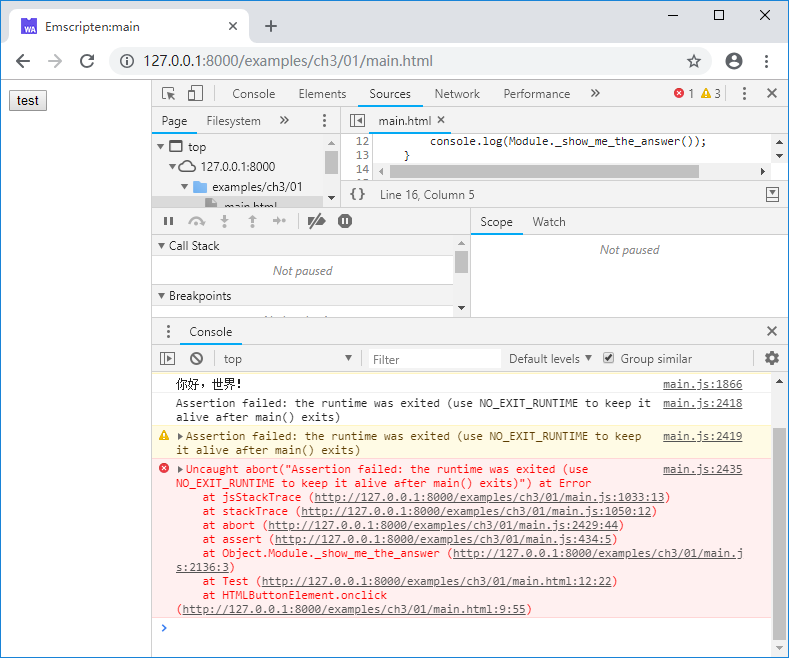

3.1 main函数与生命周期
生成本地代码时，作为C/C++程序的入口函数，通常main()函数意味着程序的整个生命周期，程序随main()函数返回的返回而退出；而在Emscripten下，情况有所不同，来看下面的例子：
//main.cc
#include <stdio.h>
EM_PORT_API(int) show_me_the_answer() {
return 42;
}
int main() {
printf("你好，世界！\n");
return 0;
}
网页部分：
//main.html
<body>
<button id = btn_test onclick=Test() disabled = true>test</button>
<script>
function Test(){
console.log(Module._show_me_the_answer());
}
Module = {};
Module.onRuntimeInitialized = function() {
var btn = document.getElementById("btn_test");
btn.disabled = false;
}
</script>
<script src="main.js"></script>
</body>
页面打开后，main()函数执行，控制台输出了“你好，世界！”：

此时，如果点击页面上的“test”按钮，控制台输出：

main()函数退出后，Emscripten运行时核心（Module）依然可用！而且在之前的章节，很多例子里面甚至根本都没有main()函数，由此可见：对Emscripten来说，main()函数既不必须，运行时生命周期亦不由其控制。
如果希望在main()函数返回后注销Emscripten运行时，可以在编译时添加-s NO_EXIT_RUNTIME=0选项，例如：
emcc main.cc -s NO_EXIT_RUNTIME=0 -o main.js
使用上述命令编译，页面载入后再点击“test”按钮，控制台将输出以下错误：

info 自Emscripten v1.37.26开始，
NO_EXIT_RUNTIME默认为1